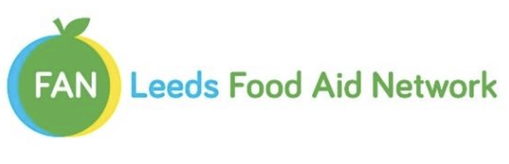

Leeds Food Aid Network works to provide enough food for people in leeds We try to ensure that everyone is treated fairly with food
For further information and events, check out our social medias linked below!